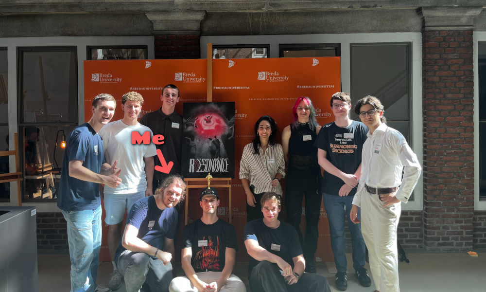

Overview
For BUAS block D I worked together with a team of 4 Artists, 3 Designers a producer and 2
other programmers
We had to create a game that was loosely based on the game: "Ape out"
I also had to implement a Research project for which I chose Fog rendering/Fluid
physics.
This project also got awarded:
"Best Y1 Design" at BUaS awards
And got nominated for:
"Best Student Game" at the Dutch Game Awards 2025
 Game
Game
